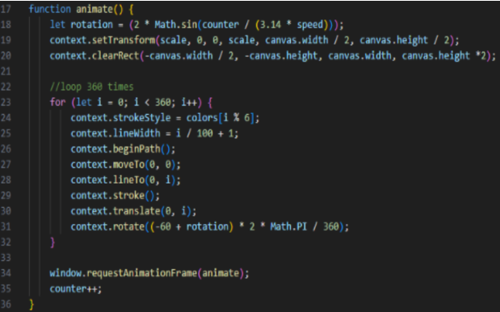
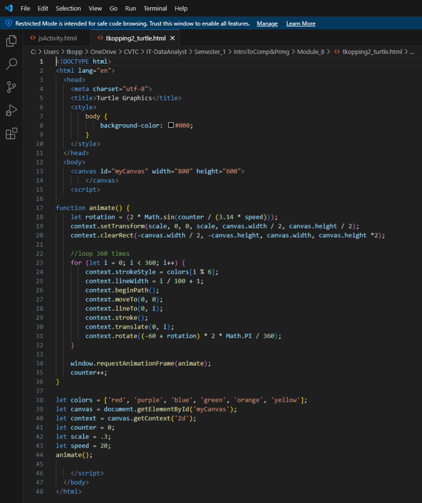
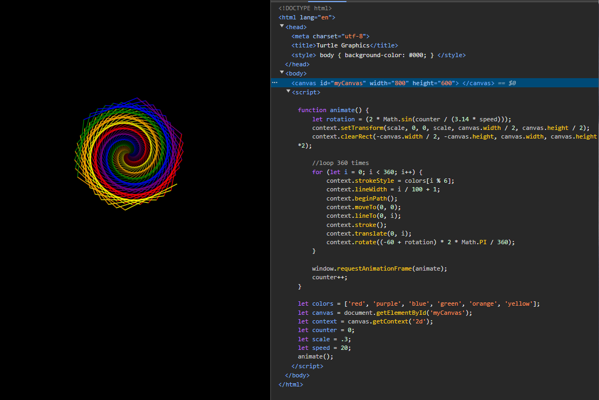
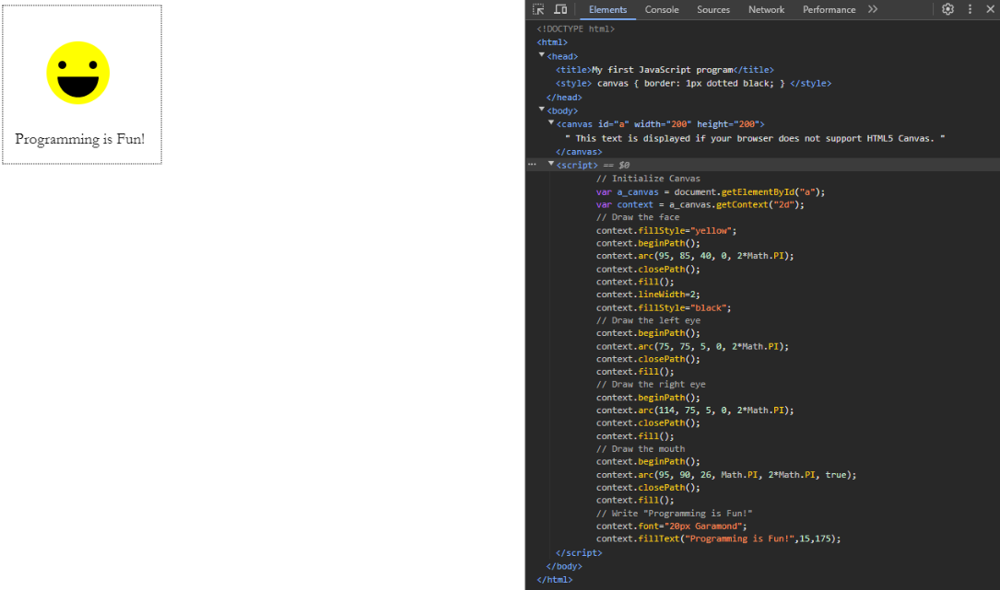
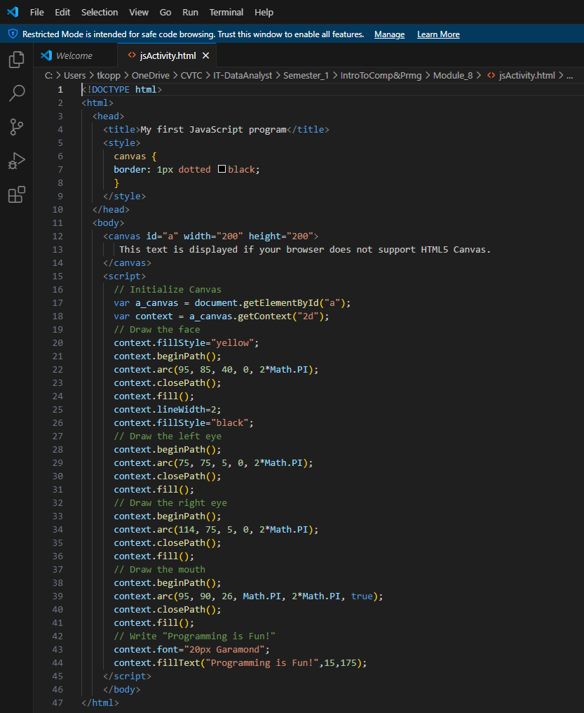
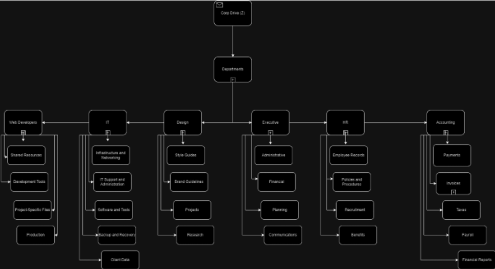
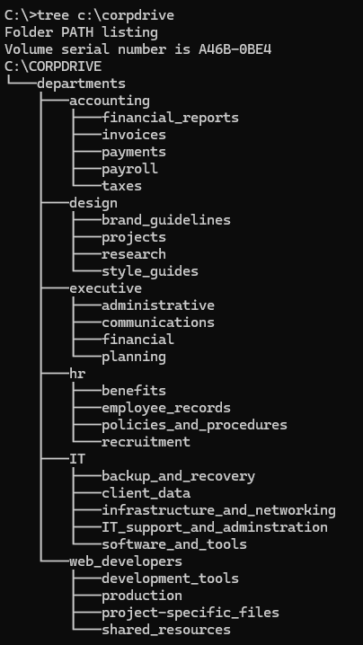

This course provided a foundation in Information Technology and Software Development, bridging the gap between hardware mechanics and programming logic. It highlights the practical and theoretical skills necessary to navigate modern computing environments and design efficient, secure technical solutions.
Practiced the definition and syntax of functions to create modular, reusable code.

Studied the importance of Enterprise Resource Planning systems and their core components in business operations.
Learned the distinction between simple statements and compound statements, which contain conditions and nested logic.
Implemented program decision-making using if constructs and switch statements.
I applied the use of functions and for-loops learned during the course to build structured program logic.


Applied programmatic skills to produce a dynamic image using JavaScript coding constructs.


Created a file system diagram to demonstrate a structured approach to data management prior to CLI implementation.

